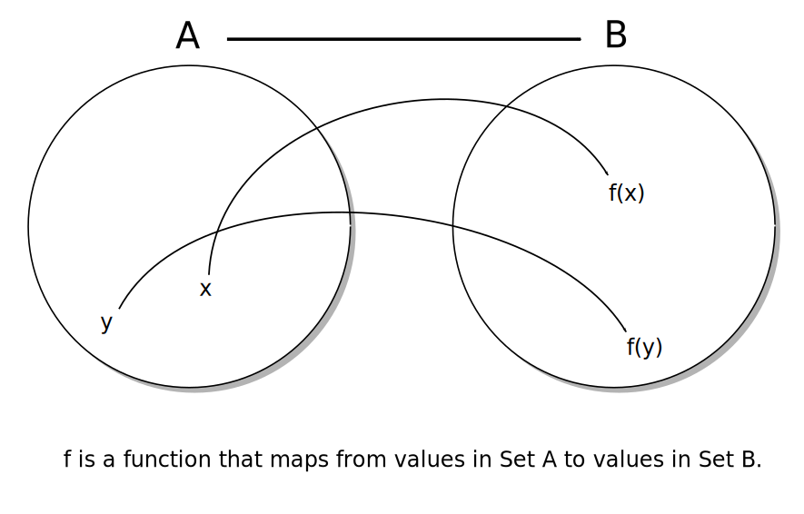

What do functional languages teach us? How does learning one change the way we write Python?
Created byCrispin Wellington
"Lisp is worth learning for the profound enlightenment experience you will have when you finally get it; that experience will make you a better programmer for the rest of your days, even if you never actually use Lisp itself a lot."
-- Eric S Raymond
Lisp is afamilyof languages recognised by their unique syntax, heavily influenced by lambda calculus and where source code is comprised of lists.
(println "Hello, world!")
(print "What is your name? ")
(let [name (read-line)]
(println "Hello, " name "! My name is John McCarthy))
Lisp was invented by John McCarthyin1958. It is a pioneering language that invented things like:
Clojureis a modern Lisp variant written byRich Hickeythat produces compiled artifacts that run on the Java Virtual Machine, the Common Language Runtime or on Javascript engines, including in the browser.
Functional programming is programming in a style that favours (pure) functions over other constructs.
In mathematics, a function is a relation between a set of inputs and a set of permissible outputs with the property that each input is related to exactly one output.
-- Wikipedia
A simple function that maps a number to its square:
In Haskell:
square :: Int -> Int
square x = x * x
In Clojure:
(defn square [x]
(* x x))
In Python:
def square(x):
return x*x
A function is pure if both:
The function always evaluates to the same output value given the same values for its input arguments.
and:
Evaluation of the result does not cause any semantically observable side effect or output, such as mutation of mutable objects or output to I/O devices.
In functional programming we want to use pure functions. ie. They take parameters, only operate on those parameters, don't mutate state, and return a value to the caller
| Function Call | Pure or Impure? |
|---|---|
| len(mystring) | Pure |
| math.sqrt(mynum) | Pure |
| random() | Impure |
| sorted(mylist) | Pure |
| myfile.read() | Impure |
| datetime.today() | Impure |
Takes a function and a collection. Evaluates the function, passing in every item in the collection. Takes all the return values of those calls and returns them in a new collection.
[f(x) for x in coll]
{f(x):g(x) for x in coll}
{f(k):g(v) for k,v in coll.items()}
(f(x) for x in coll)
Takes a collection and returns a new collection containing only those items from the first that pass some test.
[x for x in coll if x=="foo"]
[x for x in coll if h(x)]
{k:v for k,v in coll.items() if h(k,v)}
Consume all the items in a collection by passing them in turn to a function. That function gets passed the item being consumed, as well as the result of the last function call that was done on this collection.In this way a collection of items are fed through a function that reduces them to one output value.
Reduce optionally takes an initial argument that will be used in the first call to the function. If this is not specified, the first call is passed two items from the start of the collection.
>>> def f(a,b):
... print "f called with:", a, b
... return a+b
...
>>> reduce(f, range(10))
f called with: 0 1
f called with: 1 2
f called with: 3 3
f called with: 6 4
f called with: 10 5
f called with: 15 6
f called with: 21 7
f called with: 28 8
f called with: 36 9
45
>>> def reverser(a,b):
... print "reverser called with:", a, b
... return [b] + a
...
>>> reduce(reverser, [1, 4, 9, 16, 25], [])
reverser called with: [] 1
reverser called with: [1] 4
reverser called with: [4, 1] 9
reverser called with: [9, 4, 1] 16
reverser called with: [16, 9, 4, 1] 25
[25, 16, 9, 4, 1]
>>> coll = [-20, 10, 100, -43, 35]
>>> reduce(lambda a,b: a if a < b else b, coll)
-43
>>> reduce(lambda a,b: a if a > b else b, coll)
100
>>> reduce(min, coll)
-43
>>> reduce(max, coll)
100
>>> min(coll)
-43
>>> max(coll)
100
Q: If I can't change anything, how can I do anything? How can I model change at all?
A: By building new things that are the same as the old things, but slightly different
| Imperative | Functional | |
|---|---|---|
| Machine-like | Mathematical | |
| Single thread performance | Faster | Slower |
| Smaller Memory Use | Larger Memory use |